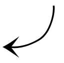
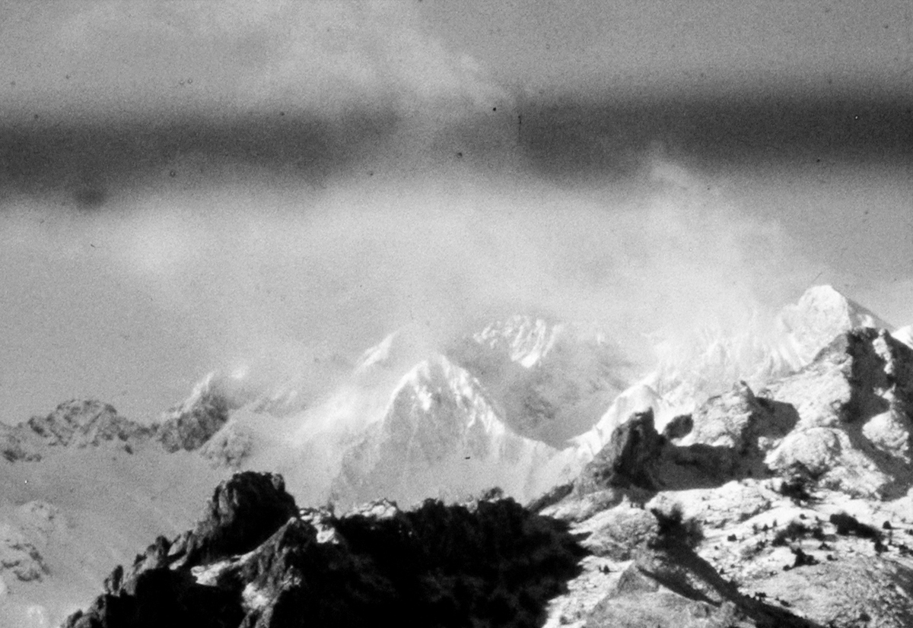

|  | Performance view photographs: Érik Bullot  |
We Only Guarantee The Dinosaurs 2014 — 2015 Performance — environment 16mm films, 8 x 1m red carpet, palm tree, variable measure of ribbon, raincoat, kettle, cardboard box, dry ice, water, microphone, ostrich feather, tungsten lamp, mussel shells, 2 16mm film projectors on wheeled supports From a territory inherited from the confluence of cinema, sculpture, and dance, the conditions of enunciation of the filmic image are transformed. Cinema's luminous resonance occupies a space and has the potentiality of turning it into a tactile, magnetic, and gaseous geometry from which projecting does not simply consist of creating optical and magnified images through a film and onto a screen. To project also relates to thought processes and bodily actions.* *Should We Put an End to Projection? (Dominique Païni, October 110 Fall 2004, The MIT Press . We Only Guarantee The Dinosaurs has been presented in Mexico, Canada, Cuba, Belgium, Ireland, Argentina, France and Spain. |
«If the performance suggests a pile-up of film history references, it is also informed by a conception of cinema through which all manner of concepts, disciplines, and categories run. Collado’s references to physics, geometry, and optics, and her incorporation of very deliberate, slow, and methodical actions with her props, implies that the “negotiation” of real and illusory film space at the center of We Only Guarantee the Dinosaurs is, in fact, a measurement of different kinds of distances and scales, understood both literally and metaphorically, or both material and ephemeral terms. Collado quotes Dominique Païni’s 2004 essay “Should We Put and End to Projection?”, in which Païni enumerates the word itself, unearthing hidden associations that become the bases for Collado’s essentialist investigation. [...] projection, according to Païni, is “a word that refers to activities of thought as much as physical or bodily exertion”, a phrase Collado cites approvingly in a statement accompanying the performance. The notion links Collado’s work to that of Paul Sharits, in its exhaustive cataloguing of “filmic elements”: “processes of intending to make a film; processes of recording light patterns on raw stock [...]; processes of processing; processes of projecting; processes of experiencing.” A film, or a cinematic work, is at the intersection of this nexus of objects, disciplines, thought processes, and energies.» —Jonathan Walley, Cinema Expanded, Oxford Univerity Press, 2020. «We Only Guarantee The Dinosaurs enchanted the audience with a carefully-constructed choreography guiding a series of objects through an earnest investigation of the essence of cinema (pre, present, post) and its possibilities. On/off screen space dissolved; time and space unfolded in simple gestures; shadow play and dancing leaves, red ribbons and carpets, friends and muted fruits. The future of a thriving film art relies upon efforts like [this], so that cinema(rt) never dies and regenerates into forms we cannot yet know». —Jodie Mack, Love Letter to Esperanza Collado, in La Furia Umana nº 7 2014. «In a day and age when moving images are so ubiquitous, so easy to make and handle, and so throwaway, this eccentric process by which she worked and worked in front of the audience towards a fragile apparition of a film image affected me as a purification ritual for the moving image itself, a rebirth, a small and indecisive miracle. Which risks making the performance sound very pompous - in fact it was very funny as well and full of healthy absurdity». —Maximilian Le Cain, EFS Publications 2016. «[We Only Guarantee the Dinosaurs] muestra que una porción de hielo es YA montaje cinematográfico y que la casa del cine tiene muchas más estancias de las que el imaginario valetudinario ofrece». —Julius Richard, Transit: Cine y Otros Desvíos 2014. «Así, el eco de la primera impresión era que estaba ante un espectáculo de variedades, antiguo y divertido, para después cortar con ello despreocupadamente e instalar en mi cabeza la magia del Cine. El sistema del Cine, de la Historia del cine». —Jorge Núñez, Fuerza Vital 2014. |